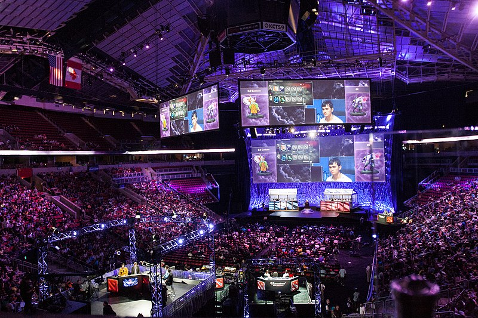

|
|
Histoire du Jeu Vidéo |
|
|
Histoire du Jeu Vidéo |
Quel avenir pour le jeu vidéo ? |
Le E-SPORTCertaines pratiques de loisirs sont consacrées en tant que sport, aussi appelé « sport moderne ». C'est une notion complexe et multiple qui n'existe dans ce sens que depuis le XIXe siècle, avec l'émergence des sports bourgeois anglais et des Jeux olympiques2. Pour le courant « hygiéniste », le sport électronique ne peut être considéré comme tel puisqu'il ne constitue pas, à proprement parler, une activité physique. Cependant, pour les jeux les plus rentables tels que Starcraft ou League of Legends, le rythme régulier des compétitions entraîne une hygiène de vie stricte et un entraînement régulier, ce qui pour certains s'apparente à un travail physique (les joueurs de Starcraft sont réputés pour effectuer 300 « APM », c'est-à-dire 300 actions par minute). Il est cependant proche de sports moins directement physiques, comme les échecs. League of LegendsÀ partir de 2016, la chaîne américaine Turner Broadcasting System (TBS) commence à diffuser les vendredis des matchs de la ELEAGUE, une compétition de Counter-Strike: Global Offensive, qui réunit environ 19 millions de téléspectateurs, en plus des diffusions en streaming sur Twitch L’événement le plus regardé de l'histoire du sport électronique est le 5e championnat du monde de League of Legends, avec un total de 36 millions de vues et un pic d'audience de 14 millions de vues, battant le record précédemment détenu par le championnat du monde de la saison 3 (2013) En France, la chaîne C8 mise sur l'e-sport et a, par exemple, diffusé entre fin septembre et fin novembre 2017 un tournoi de Counter-Strike GO, à l'instar des chaînes L’Équipe TV, Canal+, BeIn Sports ou SFR Sport, qui ont déjà entamé ce type de diffusion. Depuis janvier 2018, ES1 est la première chaîne française entièrement dédiée à l'e-sport. |
 |
Twitch, LOL
Pour les besoins d'un tournoi du jeu League of Legends le 4 octobre 2014 à Los Angeles, le Département d'État des États-Unis a reconnu les grands joueurs de sport électronique comme sportifs professionnels afin d'obtenir les visas nécessaires pour se rendre à la compétition plus facilement.
Il y a chaque année de plus en plus de pratiquants de e-sport. On compte pas moins de 14 millions de pratiquants, au moins occasionnels, de jeux vidéo, 7,3 millions de pratiquants réguliers de jeux vidéo, 6,8 millions de personnes qui ont une affinité avec le e-sport, 1,7 million déclarent suivre l’actualité de l'e-sport régulièrement et 3,6 millions de pratiquants à des compétitions de e-sport.
Les Tournois
Les tournois professionnels les plus largement reconnus sont ceux de la CPL, des World Cyber Games ainsi que la Electronic Sports World Cup.
À l'été 2015, le tournoi The International se déroulant sur le jeu Dota 2 a atteint le prize pool (somme totale des prix) le plus important de l'histoire de l'esport : 18 429 613 dollars dont plus de 6 000 000 $ uniquement pour les vainqueurs. En 2016, cette compétition bat à nouveau le record de prize pool, avec 20 770 640 dollars dont plus de 9 millions pour les vainqueurs.
En 2018, Intel organise un tournoi e-sport en amont des Jeux Olympiques d'hiver de 2018, à PyeongChang, avec le soutien du Comité International Olympique, laissant toujours le doute planer sur une future participation aux Jeux Olympiques.
En 2019, les esports deviennent une discipline olympique lors des Jeux d'Asie du Sud-Est célébrés aux Philippines. Six médailles pour les jeux Mobile Legends: Bang Bang, Arena of Valor, Dota 2, Starcraft II, Tekken 7 et Hearthstone, sont reparties en trois catégories : Consoles, PC, et Mobiles
|